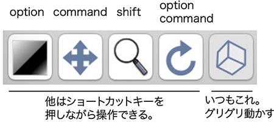

Horos/OsiriX (Mac)
(This page is still in Japanease only.)
Things to do in Horos/OsiriX /やることリスト
- インストール、プラグイン追加（初回だけ）
- Horosの基礎、ウィンドウについて。
- 連続JPEG画像をとりこむ。DICOM変換
- データベース（患者名）を整理する
- グレースケール連続画像は、３D再構築Multiple planer reconstruction (MPR)とVolume Rendering（VR）に利用する
- カラー画像は、３D再構築Multiple planer reconstruction (MPR)に利用する
- 動画を書き出す
- 関心領域 Region of Interest（ROI）
- 明暗でROI指定（Horosだけでやる方法）
- 手作業でROI指定（Horosだけでやる方法）
- 色域指定（Photoshopで処理してからHorosでやる方法）
Bugs in Horos/バグ
プラグインをインストールできない 2021.03 （2021.6 できるようになった）
v3.3.6をインストール後、プラグイン（JPEG-DICOM）を追加しようと思ったら、一覧が出てきません。「No Horos plug-in server available.」となります。以前にインストールされたHorosとJPEG-DICOMはそのまま使えますが、やはり一覧がでません。アプリからサーバにアクセスできないようです。ただし、コンテンツ（下記）は存在しているようです。下記のサイトから、JPEGtoDICOMへ移動し、その中のJPEGtoDICOM.horosplugin.zipをダウンロードします。Horosを起動した状態で、ダウンロードしたファイルをダブルクリックするとインストールができるようです。
https://horosproject.org/horos-content/plugins/horos/
MPR/VRからの動画描きだし 2020.12
Horos 3.3.6やそれ以前のバージョンで、MPR(多平面再構築)から動画を描き出したいとき、Movie Exportを行います。しかし、書き出される動画が小さく(たてよこのピクセル数が少なく)なってしまうというバグがあります。v4.0.0 Release Candidate4では、やや大きくなるので実用的ですが、こんどはVolume Renderingでバグがります。いまのところ、新旧を使い分けるくらいしか、対応策がありません。新旧のバージョン両方をインストールして、区別するために名称変更して使っています。データベースフォルダは共通で使えるので、データベースが倍増することはありません。OsiriXでは問題ありません。
- Horos 3.3.6:MPR動画は小さくて使いにくい(一辺約500 pixel)。VR動画は正常。
- Horos 4.0.0RC4:MPR動画はやや大きくなってなんとか使える(一辺約700 pixel)。VR動画はFly Thruの座標がずれるので使えない。
- OsiriX MD v11(有料版):MPR動画は大きくて実用的。VR動画は正常。
セグメンテーション後 2020
Segmentationした領域の体積数値をみようとしたら、落ちました。いちおう回避策はありますが、この件でも、セグメンテーションは、3D slicerにしようと思いました。
新しいHorosが起動しない 2020
Horos 4.0.0 RC5（2020.12）は、2Dビューワが起動しません。MBP13（2105）、OS11.1 Big Sur。
インストール、プラグイン追加（初回だけ）
インストール
https://horosproject.org ここからダウンロード、インストールする。日本語環境が用意されているが、フリーズするので、英語のまま使用すること。開くと、いろいろメッセージが出てくるけれど、とりあえず使ってみる。Continueボタン。
プラグイン
プラグイン「JPEG to DICOM」をインストール、Plug-ins Plug-in Managerで、新しいウィンドウが開く。上部のHoros Pluginsをクリックし、プルダウンでJPEG to DICOMを選ぶ。下部のDownload & Installをクリック。この作業は、インストール後の使い始めに一度行うだけです。
Horosの基礎、ウィンドウについて
ウィンドウは、大きく分けて3種類あり、さらに派生したウィンドウもある。よく使うウィンドウを下記に5種類挙げた。データベースウィンドウで、見たいデータをダブルクリックして、2Dビューワを出す。2Dビューワで、メニューやボタンを使って、3Dビューワを出す。
- データベース（起動時のウィンドウ）
- 2Dビューワ
- 連続画像の閲覧
- Orthogonal Planer Reconstruction 直行面再構築
- 3Dビューワ
- Multiple Planer Reconstruction 多平面再構築
- Volume Rendering ボリュームレンダリング、など
JPEG連続画像を取り込む（DICOMに変換して取り込む）
Plug-ins>Database>JPEG to DICOM- 連続画像を含むフォルダに行って、すべての画像を選択する。最初の画像を
Click、最後の画像をShift+Click。またはCntrl+A。画像が多いと、選択されるのに、数秒かかる。 - 試料名(患者名)や、実験日(検査日)などを入力する。私は、実験日、試料名、画像のピクセルサイズを入力している。
- 開く、
Open（多少、時間がかかる） - ほかにも連続画像があれば、作業を繰り返す
ヒント
-
過去のHorosバージョンでは、フォルダを選択するだけで、取り込めました。しかし、新しいバージョンでフォルダ選択で取り込んだ場合、画像の順がバラバラになります。きっとバグです。上記のようにすべての画像を選択する操作を入れると、正常に取り込めます。有料OsiriXでは、2021年1月のJPEG to DICOMプラグインのアップデートがあり、フォルダ選択が可能に戻りました。
-
ファイル名を連番にする。一括変換、必要に応じて、縮小作業の前に
CoMBIの撮影が通常に成功した場合は、必要ありません。ファイル名が9999から0001に戻ったとか、特別な事情があるときに、ファイル名を一括で変換します。
3D slicerの場合、完全な連番が必要です。連番のうしろに残しておいた元ファイル名が飛び飛びの場合、連続画像とは認識されません。完全な連番にしたとき、元データとの照合（実験の再現性）ができるように、メモを残してください。
Horosの場合、頭に連番さえあればよい。
変換前 よい例 3Dslicerではダメな例
ただしHorosではよいDSC_9997.jpg 0001.jpg 0001_DSC_9997.jpg DSC_9998.jpg 0002.jpg 0002_DSC_9998.jpg DSC_9999.jpg 0003.jpg 0003_DSC_9999.jpg DSC_0001.jpg 0004.jpg 0004_DSC_0001.jpg DSC_0002.jpg 0005.jpg 0005_DSC_0002.jpg DSC_0003.jpg 0006.jpg 0006_DSC_0003.jpg -
Windows OSで一括変換：
Exploreで複数選択、名称変更すると、「入力文字(1).jpg」と、カッコつき連番数字になる。元のファイル名は残らないので注意。 - Mac OSで一括変換：
Finderで複数選択、右クリック（副メニュー）より、ファイル名を変更。完全変更や連番追記など、ある程度カスタマイズできる。 - 便利に一括変換：Adobe Bridge（有料アプリ）なら細かく設定ができる。
データベース（患者名）を整理する
同一標本から、複数の連続画像シリーズ（カラーシリーズとグレースケールシリーズ、サイズ違い）ができる。それぞれで取り込むと、リストには 2行、3行と、複数患者として表示されてしまう。これを、同一標本なら1行（1患者名）にして、派生したシリーズ（複数の検査項目）をまとめて表示させられます。
- まとめたい行(患者名)を複数選択する。
Shift + click - 選択した行の上で、
Right clickし、Merge Selected Studiesを選ぶ。 - チェック項目では、上2つの項目にチェックが入っていることを確認する。
Use same Patient ID,Merge as a single study OK
グレースケール連続画像の利用
すべての3D再構築法に利用できる。2D orthogonal MPR, 3D MPR, 3D curved MPR, 3D MIP, 3D volume rendering, 3D surface rendering, 3D endoscopy。
3D viewerまたは歯車マークより、3D MPR,3D volume renderingなどを選ぶと、別のウィンドウがでる。- 再構築する前に、ボクセルサイズを入力する。XYはピクセルサイズ、Zは切削厚。ヒトCT用アプリなので、単位がmmしかない。µｍだとおもって入力する。
ヒント
-
Shiftを押しながら、MPRやVRを選択すると、毎回、ボクセルサイズを入力する画面をだせる。 -
Volume RenderingでもMPRでも、初期表示では、暗いかもしれないが、明るさやコントラスト(Window level、Window Width)をいじって、見やすくする。
-
まれに、
歯車マーク（2D/3D再構築)が消えてしまうことがあります。こうなると「Volume dataではありません」というたぐいのメッセージがでて、先に進めません。原因不明です。解決することはしますが、いいかげんです。次の３つのうちどれかです。-
そのまま数秒待つと出てきた。
-
次の日にはできた。
-
ほかのパソコンではできた。いずれも同一のデータセットです。
-
カラー連続画像の利用
面の再構築にだけ利用できる。2D orthogonal MPR, 3D MPR
3D viewerまたは歯車マークより、2D orthogonal MPRまたは3D MPRを選ぶと、別のウィンドウがでる。- 再構築する前に、数値を入力する。XYはピクセルサイズ、Zは切削厚。ヒトCT用アプリなので、単位がmmしかない。µｍだとおもって入力する。
ヒント
Shiftを押しながら、MPRなりVRを選択すると、毎回数値入力画面をだせる。3Dウィンドウでは、最初は、暗いかもしれないが、明るさやコントラスト(Window level、Window Width)をいじって、見やすくする。- まれに、
歯車マーク（2D/3D再構築)が消えてしまうことがあります。こうなると「Volume dataではありません」というたぐいのメッセージがでて、先に進めません。原因不明です。解決することはしますが、いいかげんです。次の３つのうちどれかです。1)そのまま数秒待つと出てきた。2)次の日にはできた。3)ほかのパソコンではできた。いずれも同一のデータセットです。
基本操作
下図、左から、明るさとコントラストの調整、移動、拡大縮小、回転、3D回転（Volume Rendering用）。画面を上下左右にドラッグする。ツール選択は、それぞれのボタンを押すか、ショーロカットキーを押すか。ショートカットキーのほうが断然便利です。連続画像をめくるのは、マウススクロールなど。

いつもつかう、基本のツール
パソコンモニタが小さい場合、ツールボタンが隠れるときがあります。隠れていれば、右端のマーク>>を押すとでてきます。もしくは、よく使うボタンやメニューを左へ寄せることもできます。ツールボタンがあるグレーの領域で、右クリックすると、ツールボタンの表示位置や有無をカスタマイズできます。
2D orthogonal MPR
直行面だけで、3面を再構築できる。次の3D MPRより軽い作業。グレースケール連続画像、カラースケール連続画像の両方でできる。静止画、動画、距離の計測ができる。下記の3D MPRとほぼ同じなので、説明は省きます。
3D MPR
任意の面を再構築する。グレースケール連続画像、カラースケール連続画像の両方でできる。
- 初期表示は、まっくらな場合がある。
Thick Slabをいじると画像がでてくる。左横の数字を大きくする。たぶん初期値1。2,3,4...10...と大きくしてみる。 色つき軸を握って、回転させる。軸の交点を握って、中心を移動させる。明るさコントラスト調整はぎこちない。初期の表示がいいことが多いが、いろいろいじってみるのも価値あります。下記の３つを変えながら、明るさコントラスト（WL, WW）を変えて、よさそうなところがみつかるか、どうか。Opacityのプルダウンを変えてみる。Thick Slabで重ね合わせる量を変えてみる。Modeで重ね合わせの種類を変えてみる。
- 画面に表示される文字たちを消したいとき、キーボード
Tabを何度か押して表示モードを選択します。 - 色つき軸の表示をON/OFFできます。ツールバーに
十字マークのボタンがあります。 - 静止画の書き出し、クリックしてアクティブになっているウィンドウを書き出せる。
File,Export,JPEGやTIFFなど。 - 動画の書き出し、
File,Export,Movie。Horosの場合、不安定。小さな画面で書き出されてしまう。小さくてもよければ使えます。もしくは、直交面MPRでよければ、そちらのほうは安定しています。OsiriX（有料）は、問題ない。From,Toで範囲を決める。Intervalでは、Same as thicknessにチェックすると高精細。重ければ、スライドバーで調整する。 - メニューバーのボタン、計測ツール、
Lengthで距離をはかれます。
3D Volume Rendering
いかにも3D画像を再構築する。美しい画像は魅力的である。画像を見せるだけで実験データとして済むなら、このVolume Renderingだけでよい。しかし、Volume Renderingだけでは数値化には向かない。長さは3D MPR、体積はSegmentationで行うのがよい。Volume renderingと、Segmentationした領域を組み合わせて表示させることもできる。
- 最初の設定：もしGPUが別についているマシンなら、ツールバー内にあるGPUにチェックをいれます。もしくは、
Horos>Reference,GPU,Renderer,GPUにチェックします。そのほうが快適に動作するでしょう。 - 動作が重いとき、
Level of Detailのスライダーを、FineからCoarseに寄せます。粗い表示にすると軽くなる。作業は粗い表示で、いざ静止画や動画に描き出すときは、細かい表示を使います。 - 画面に表示される文字たちを消したいとき、キーボード
Tabを何度か押して表示モードを選択します。 - 画面のさいころ様のマークは、
Orientationです。ツールバーのボタンで表示をON/OFFします。 - 明るさとコントラスト window level and window width 基本ツールで、上下左右ドラッグします
-
色つけ CLUT 8 bit、まずはプリセット、CLUTのプルダウンから選べます。カスタマイズして、プリセットを作って保存することもできます。
-
色つけ CLUT 16 bit、豊かな階調で色付けできます。カスタマイズしてプリセットとして保存できます。
-
静止画の書き出し
File,Export,JPEGやTIFFなど。 - 動画の書き出し Fly Thru
- ツールバーの
ボタンFly Thruを選びます。または、メニューバーの3D viewer,Add Fly Thru Pointを選びます。 - Stepを記録 ちょっと動かしては、
+ボタンをおして、繰り返します。動かしたい奇跡をまずは点で記録しています。あとで点を結んで動画にします。 - オプション 記録した点を、ファイル保存できます。下のボタン
Export - 動画 タブ
Movieに移ります - Number of Frames, 作りたい動画の長さを、秒数×30で入力。一般に、30 frame/secです。10秒動画にしたいなら、300です。
Computeを一度押します。- 形式
QuickTime、Quality:Best Rendering、SizeCurrent。次のステップで重すぎれば、サイズを調整してください。 Save,ファイル名を決めたりして、書き出しは時間がかかる。 ヒント、クロップ操作も記録できます。明るさコントラスト調整は、記録できない、ことが多い。たぶんバグ。
- ツールバーの
セグメンテーション Segmentation
セグメンテーションは、特定の領域（関心領域、Region of Interest、ROI）だけを選択すること、描出することです。選択したROIからは、体積の数値が得られます。実験では、セグメンテーションが目標になる場合があるでしょう。 ROIを指定する方法として、一般的な画像（グレースケールのDICOM画像）では、明暗で選択する方法(Horos/ROI>Grow Region)と、形状を手作業で選択する方法(Horos/ボタンClosed Polygon)があります。CoMBIの場合、カラー画像なので、色域指定も利用できます(Photoshop/選択範囲/色域指定 + Horos/Grow Region)。
- 明暗でROI指定: 明暗のコントラストがハッキリし、かつ、輪郭がハッキリした形状であればうまくいくでしょう。例えば、ヒトCTデータなら、骨や肺です。しかしながら、研究試料のCoMBI連続画像では、この方法ではうまくいかないことが多いでしょう。この方法だけでは思い通りに指定できず、結局手描きがいいとなるでしょう。
- 手作業でROI指定: 見手作業は確実です。ROI指定で参照する画像は、グレースケールでもカラーでも使えます。CoMBIの場合、カラー画像は参照しやすく価値があります。ROI情報はテキストデータに保存され、あとでVolume Renderingによる3D再構築像に重ねて表示できます。ただし、自動ではない分、時間がかかります。例えば、頚リンパ節 19個を選択するのに半日かかりました。
- 色域指定: Photoshopなどで、カラー連続画像を参照し、色域指定を自動で行えます。指定領域を二値化した連続画像をあらたに生成し、ROI(Grow Region)を自動で行います。二段階になりますが、いずれも自動です。色域指定にはPhotoshopやImageJがつかえます。Photoshopの場合、指定条件は見た目で、スポイトで選択します。さらに、複数の色を追加したり、削除したりできるのは便利です。しかし、数値入力では指定できません。ImageJの場合、RGB、彩度、明暗の各情報を数値入力で指定します。しかし、複数色の追加や削除が容易ではありません。
1.明暗でROI指定
グレースケール画像で、明るさだけで選択する。あんまりうまくいかないと思うのであっさりと記載します。
- 直行面MPRのウィンドウで行います（3D MPRでもできます）。
- グレーでもカラー画像でも使えます。
- ROI/Grow Region
2.手作業でROI指定
準備
- 直行面MPRのウィンドウで行います（3D MPRでもできます）
- グレーでもカラー画像でも使えます。
ROI指定、ROIファイル保存
ボタンClosed Polygonで複雑な形状でもROIにする。- 数枚ごとにROIを囲む。
- 描いたROIとROIの間を自動で埋める。
ROI>ROI Volume>Generate missing ROIsこのとき、描いたROIがあるスライスを表示しておく。ROIがないスライスだと、メニューが非アクティブで押せない。 -
ROI の名前をきめる
ROI>ROI rename>All ROIs in this series(ROI>ROI managerを開いておくと、名前が決まったのが見える) -
ROIを保存する。
ROI>Save All ROIs in this series(拡張子、rois_series) - 複数のROIを指定したいとき、いったん最初のROIを削除する
ROI>Delete all ROIs in this series - 複数のROIを指定するには、上記を繰り返す。 （注意）ROIファイルが複数できることになります。どれがどれか分かるように、ファイル名を決めます。
ROIを3D再構築像に重ね合わせる
- 3D再構築につかうグレースケール連続画像を2D Viewerに表示させる。（データベースウィンドウで、データをダブルクリックすると、表示されるのが2D Viewer） )
- roi_seriesファイルを読み込む
ROI>Import ROIs複数あれば複数回読み込む。 - 3D 再構築
3D>Volume RenderingXYZのスケールを入力し、3D Viewer モードになる - ROI ファイルのリストを表示
ROI>ROI manager「3D ROI manager」というウィンドウが開く。読み込んだROIのリストが表示される (メニュー表記は同じだが、上記の 2DViewer モードのときは異なるウィンドウ) - ROI表示のオンオフと着色 左端のチェック欄に、チェックを入れると、VRに重ねて表示される。 表示色を変更できる。透明度も調整できる。
体積の数値
3通りあるがHorosで安定しているのは１だけ。
2D viewerのROI manager、Volumeが表示される。 下記のComputeVolumeよりやや大きめに出るが、比較データのときは、数値をよむ方法を統一すればよい。Horosは、これだけが安定している。- 3D Viewerで、
ROI>ROI Volume>Compute Volume注意:Horosはよく落ちるのでおすすめしない。OsiriXは安定している。 3D ViewerのROI managerでも、Volumeが表示されるが、小さいモノはゼロとなったり、数値が変になる。おすすめしない。
3.色域指定
Photoshopで二値化したのちHorosでROI指定する。2段階だが全自動。
Photoshop
- 準備 カラー連続画像は、Photoshop色域指定用、 グレースケール連続画像は、Horos, VR用。フォルダを新規にひとつつくる（二値化白黒連続画像用）
- カラー画像のうち、色域指定に使えそうな一枚だけ開く
- アクションで記録開始
- Photoshopで、特定の色を選ぶ。
選択範囲 Select>色域指定 Color Range...許容量を少なめ（5とか）にして、スポイトで指定する。追加 (+)や削減(ー)を使って調節する。 - 二値化白黒画像とする
- OKボタンをおすと、選択領域が表示される。
- キーボード
Deleteで選択範囲を削除する。削除後の色はWhiteを指定する - （必要なら、境界線をなめらかにする。
選択範囲 Select>選択範囲の変更 Modify>滑らかに Smooth...） - 選択範囲を反転させる。
選択範囲 Select>反転 Inverse - キーボード
Deleteで選択範囲を削除する。削除後の色はBlackを指定する イメージ Image>モード Mode>グレースケール grayscale
- 別名で保存
Save as新しく作っておいたフォルダを指定して保存する - 画像を閉じる
Close
- Photoshopで、特定の色を選ぶ。
- アクションの記録停止
- 連続画像に、記録したアクションを一括処理する
ファイル File>自動処理 Automate>バッチ Batch...
ヒント
アクションが途中で止まる：選択領域が全くない場合、選択範囲の反転で、止まっていました。対策として、すべての画像の端っこに、指定したい色で極小の四角を描きました。これで、すべての連続画像にわずかでも選択範囲が存在することになり、アクションが正常に行われました。
忘れた：二値化画像をRGBのまま保存すると、以降のHorosでうまくROIが選べない。グレースケールにするのを忘れずに。
アクションをDropletファイルとして保存しておけば、別の実験での同一処理につかえます。
Horos/OsiriX
- 二値化白黒連続画像をHorosに読み込む
plug-in,JPEG to DICOM連続画像を全選択して（一番最初の画像をクリック、shiftを押しながら一番最後の画像をクリック）、読み込む - 読み込んだ二値化データをダブルクリックし、2D viewerをひらく
- ROI を指定する
ROI,Grow Region閾値は適当に100とする（どうせ二値化なのでハズレなし） - ROI ファイルに保存。
ROI,Save all ROIs in this series - データベースウィンドウに戻り、グレースケール連続画像（VR用）をダブルクリック。2D viewerを開く。
- 保存したROI ファイルを読み込む
ROI,Import ROI - 3D 再構築する。
Volume Renderingで3D Viewerがひらく - ROI の表示設定
ROI,ROI manager - 静止画も動画も書き出せる
ImageJ/FIJIで二値化したのちHorosでROI
Photoshopの代わりに、ImageJでもできます。Image, Adjust, Color Threshold
基本的に数値入力です。つかいなれていないので、解説は省略します。